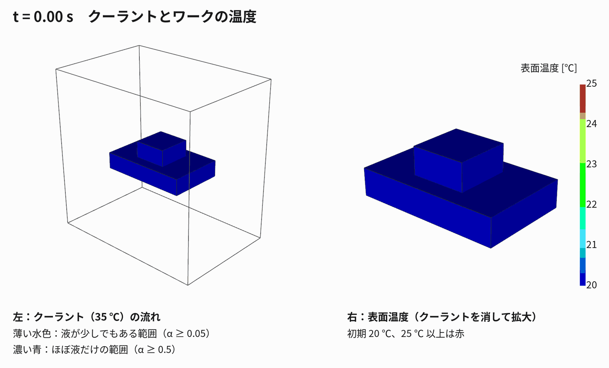

作成日：2026-11-03 OpenFOAM
v2512 ソルバ：chtMultiRegionTwoPhaseEulerFoam（解説は
01）

工作機械の加工エリア（空気）に、ポンプで温まったクーラントを流し、
ワークとテーブル（鋼）がどう温まるかを、気液二相流と固体の熱連成でまとめて解く。
参考：refs/02_Klimant…（加工エリア内の壁の熱伝達率）、refs/03_Geist…（切削油と空気の
CFD を FEM に渡す）。
| 領域 | 何を解くか | 式 |
|---|---|---|
| 流体（空気＋クーラント） | オイラー–オイラー二相流：気相と液相をそれぞれ連続体として、体積分率 α・速度・温度を相ごとに解く。圧力は共通 | 相ごとの質量・運動量・エネルギー保存＋相間の抗力・熱伝達、αg + αl = 1 |
| 固体（テーブル・ワーク） | 熱伝導だけ（流れ・変形は解かない） | ρcp ∂T/∂t = ∇·(κ∇T) |
| 境界 | 温度が等しく、熱流束がつり合う（液が濡れている所ほど熱がよく伝わる） | T流体 = T固体、Σαkκk∂Tk/∂n = κs∂Ts/∂n |
| 項目 | 値 |
|---|---|
| 加工エリア（囲い） | x 0〜600、y 0〜600（上向き）、z 0〜400 mm |
| テーブル（鋼） | x 140〜460、y 240〜300（高さの真ん中）、z 100〜300 mm |
| ワーク（鋼） | x 240〜360、y 300〜360（テーブルの上）、z 140〜260 mm |
| クーラントのノズル出口 | 天井の中央 40 × 40 mm（x 280〜320、z 180〜220）＝ワークの真上 |
| 排出口 | 床の左右の帯（x < 100、x > 500 mm） |
| 換気口 | 天井のノズル以外の部分（大気に開放） |
| メッシュ | 20 mm の六面体。流体 17,412 セル、固体（テーブル＋ワーク）588 セル |
テーブルとワークは 1 つの固体領域 solid
としてまとめている（接触熱抵抗なし）。
作成手順（make_case.py → Allrun）
blockMesh → topoSet（固体セル、ノズル・排出口の面）→ createPatch（inlet, drain）
→ splitMeshRegions -cellZonesOnly（water / solid に分割）→ setFields → ソルバ| 項目 | 設定 |
|---|---|
| 気相 | 空気（理想気体、分子量 28.96、cp 1007、μ 1.81×10⁻⁵、Pr 0.71） |
| 液相（クーラント） | 水の物性（密度 1000、cp 4195、μ 9.59×10⁻⁴、Pr 6.62）。水溶性クーラントの近似 |
| 固体 | 例題の鋼の物性 |
| 液滴の代表径（空気中に散ったとき） | 0.45 mm |
| ノズル出口 | 液のみ（αliquid = 1）、下向き 1.0 m/s、35 ℃（308 K、ポンプで温まった想定）。流量 約 96 L/min |
| 初期状態 | 加工エリアは空気のみ、空気・テーブル・ワーク 20 ℃（293 K） |
| 囲いの壁・床 | 20 ℃ 一定 |
| 排出口・換気口 | 圧力一定（大気）で出入り自由 |
| 時間 | 0〜3 秒、Δt ≤ 2 ms（Courant 数で自動調整）、0.25 秒ごとに書き出し |
| 計算時間 | 1 並列で約 12 分（この環境では mpirun が止まるため並列なし） |
tools/render_workspace.py（python の VTK
を直接使用。この環境では ParaView の pvbatch が止まるため）
run004_workspace_coolant_work3D/images/frame_*.png、coolant_workspace.gifParaView で開くときは
run004_workspace_coolant_work3D/post.foam。
上下が逆に見えるときは、カメラの「+Y を上」に設定する。